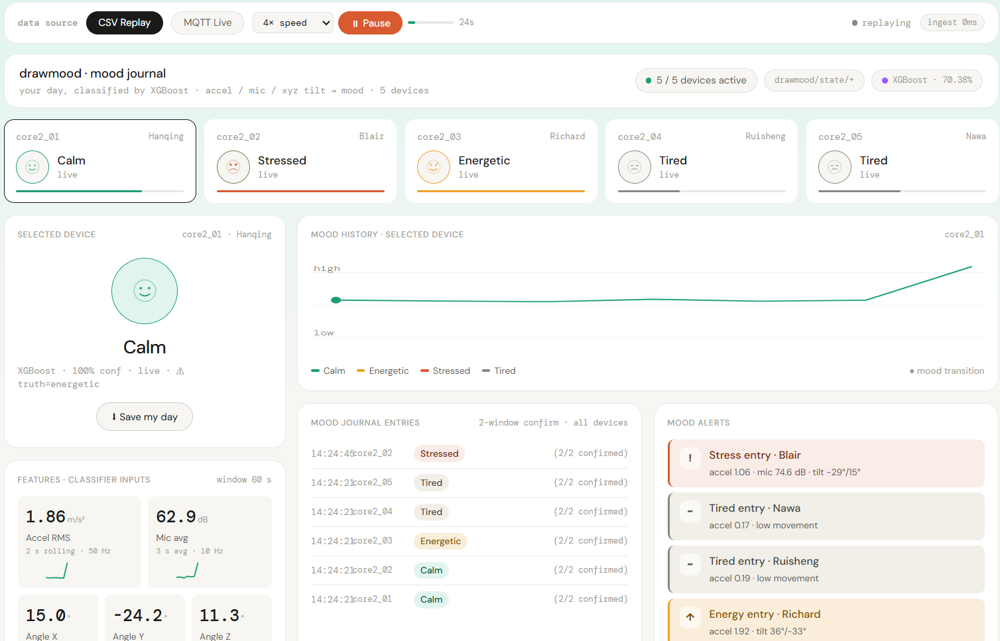
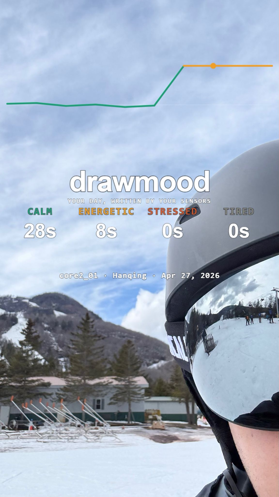
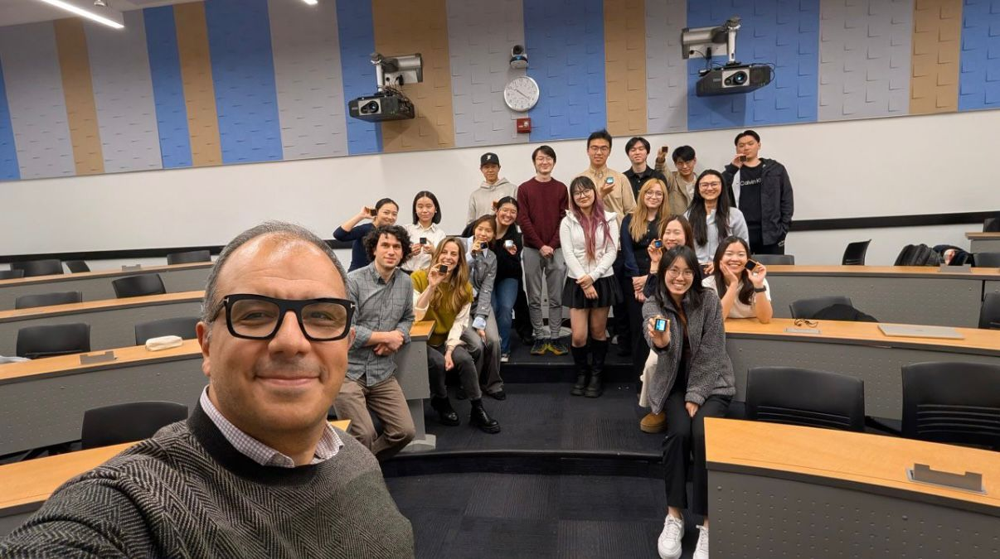
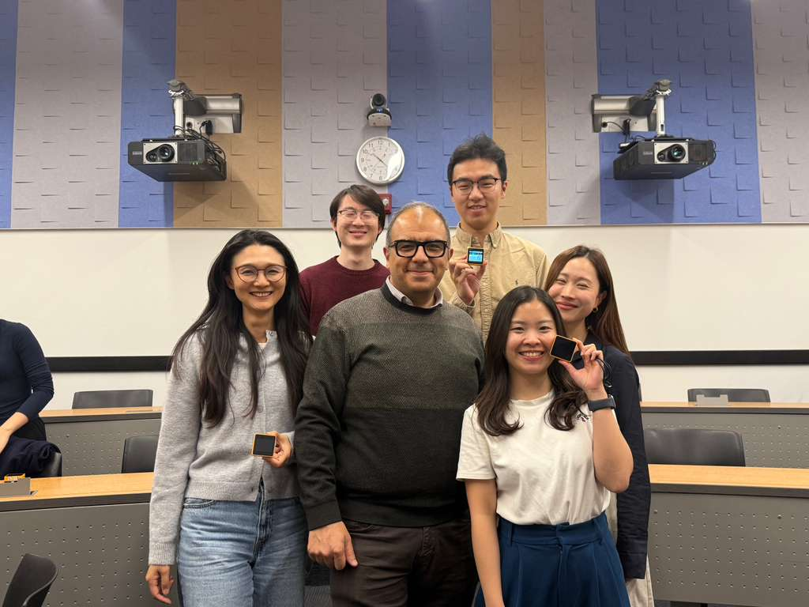

IoT · Real-Time ML · Generative Art
Built a real-time emotion detection system using wearable IoT sensors — 5 users wear M5Stack Core2 devices that sense motion and sound, classify mood every 2 seconds, and generate a visual "mood timeline" of their day.
Real-world vision
Beyond the prototype, drawmood envisions turning sensor data into a social experience — flipping the narrative from surveillance to expression. Your day, written by your sensors.


Step 1
Reflection
See your day differently. Recognize hidden emotional patterns you never noticed.
Step 2
Visualization
Data as art. Generate a full-day dynamic emotional timeline — unique to you.
Step 3
Sharing ✦
A new social layer. Attach media and share your mood timeline as an expressive artifact.
What I built
We track steps, sleep, and screen time — but emotional experience remains invisible. Draw Your Mood answers: can sensor data capture how a day feels? Five users wore M5Stack Core2 devices continuously sensing IMU motion at 50Hz and microphone audio at 16kHz. Every 2 seconds, raw signals were processed into 11 engineered features, published via MQTT to AWS IoT Core, and classified by an XGBoost model into 4 emotion states grounded in Russell's Circumplex Model of Affect (1980). Results streamed back to the device and a live Streamlit dashboard — turning sensor signals into the story of your day.
System architecture
Device / Edge
M5Stack Core2 × 5
IMU @50Hz, Mic @16kHz, touch labeling → 60s circular buffer
Communication
MQTT via AWS IoT Core
Raw batches up · mood predictions down · NTP UTC timestamps
Cloud / Inference
XGBoost on Host
11 features per 2s window · real-time inference · runtime logs
Output
Streamlit Dashboard ✦
Live + replay mode · mood timeline · 5-person comparison
Sensors & data
IMU / Accel + Gyro
50 Hz · 6 raw channels (ax, ay, az, gx, gy, gz) · m/s² and °/s
Microphone
16 kHz → 10 Hz features · dB SPL · window mean & variance
Touch Screen
Event-driven ground truth labels · 0=Calm · 1=Energetic · 2=Stressed · 3=Tired
Model results (XGBoost · test set n=1,168)
| Emotion Class | Precision | Recall | F1 | Test Samples |
|---|---|---|---|---|
| Energetic | 0.72 | 0.81 | 0.76 | 413 |
| Stressed | 0.69 | 0.74 | 0.71 | 324 |
| Tired | 0.72 | 0.71 | 0.71 | 267 |
| Calm | 0.63 | 0.37 | 0.46 | 164 |
| Weighted avg | 0.70 | 0.70 | 0.70 | 1,168 |
70.38% accuracy · 0.66 Macro F1 across 4 emotion classes. 5 devices × 1 msg/30s = ~14,400 msgs/day — well within AWS IoT Core free tier. Calm class underrepresented (n=164) — more data collection planned to balance the dataset.

Final demonstration day with classmates and Professor Javid Huseynov — showcasing our AIoT projects built on AWS IoT Core.

Group 2_Draw your Mood · Hanqing, Richard, Ruisheng, Nawa, Blair
Tech stack
Links